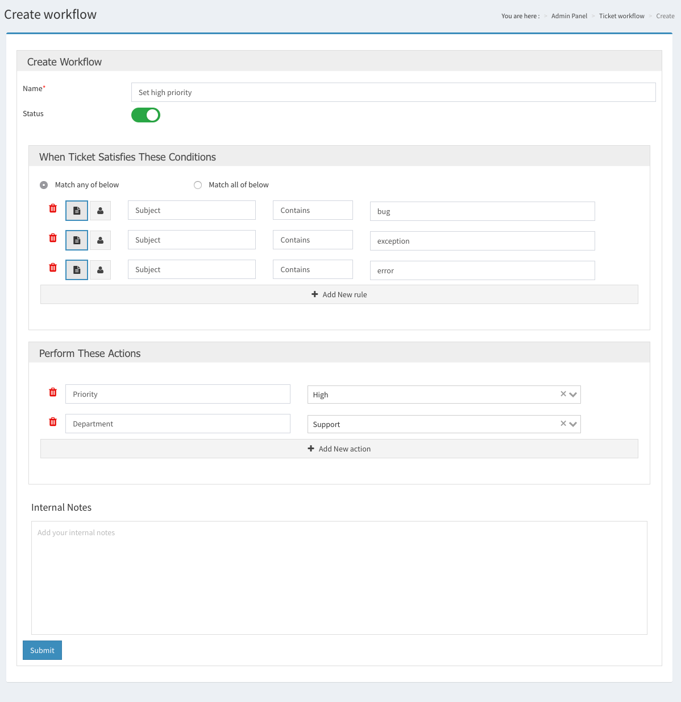
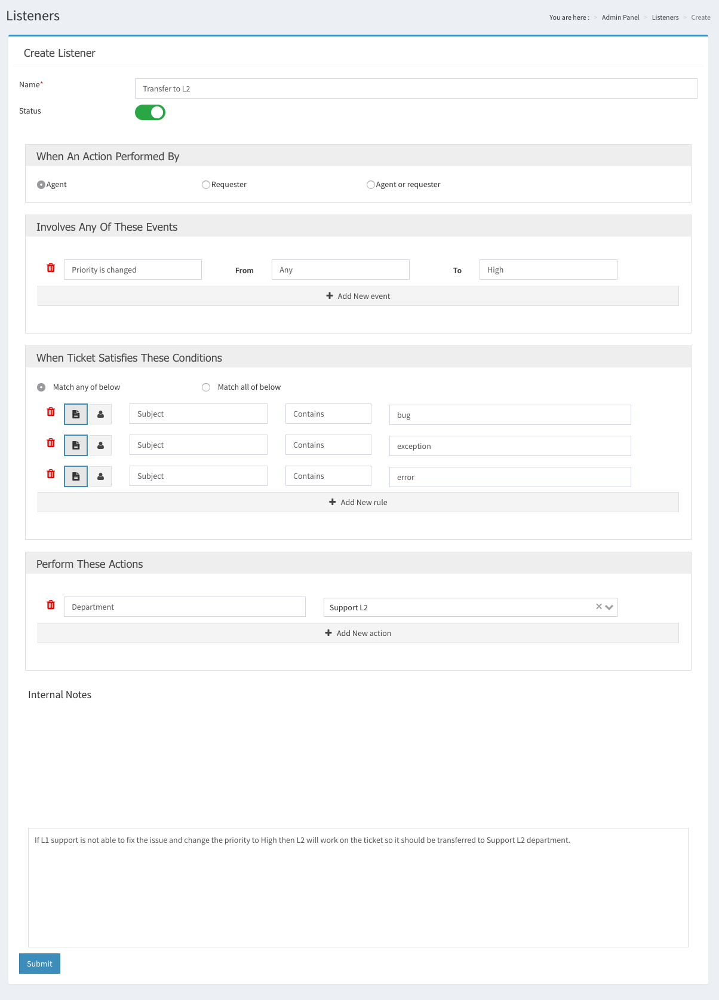
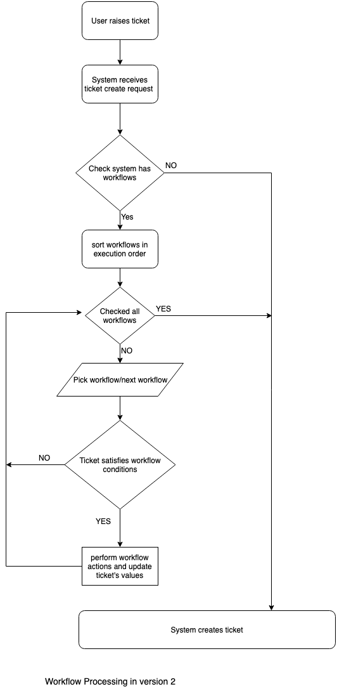
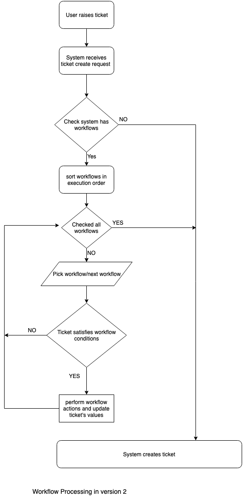

Faveo Helpdesk version 2
Faveo team released version 2 of Faveo Helpdesk this year on April 9. The latest released version is v2.1.7 which released on the 24th of August. The tag v2 suggests a lot of things are improved in Faveo Helpdesk to add new features and fix existing functionalities. These improvements may impact the existing functionalities of your system and how you use them.
Laravel Framework update
Faveo is built using the Laravel framework which is one of the most robust frameworks for PHP out there in the market. Laravel has a large number of packages supported by its numerous contributors and open source community. Hence it provides various functionalities out of the box so the Faveo team can focus on converting the business logic into a feature. Older versions of Faveo may have Laravel version ranging from 5.5.X to 5.7.X. The latest version of Faveo updates the Laravel framework to v5.8.*Vue is a new view
Since Vue is rising its popularity among frontend and full-stack developers, we have started rewriting the code which renders on the client side using Vue for various reasons.First and foremost it has better compatibility with the Laravel framework which is the core of our application. It also allows us to rewrite small parts of the application, convert them into Vue and release without affecting the whole application or rewriting complete frontend code which may take an eternity.
Version 2 is our next step towards converting the application into Vue. It converts various parts of the application into Vue integrated modules. Which means we had to make various changes in backend and frontend code. These updates modify the code of some core functions of the application thus the release is tagged as v2.0.0. However, we tried to make these updates backward compatible with the older version there are few functions and APIs which are not backward compatible after all good things come with some price.
Workflow and Listeners
Workflow and listeners allow the system to automate the process for agents so you and your colleagues can focus on providing resolutions to your valuable clients while the system takes care of the most trivial tasks such as assigning tickets to the proper department or prioritizing the tickets. While workflow allows you to automate these processes at the time of ticket creation, listeners do the same when tickets are updated. Version 2 has improved UI to define all rules and actions on a single page, which prevents you from the hassle of navigating from one tab to another.Workflow create/edit screen
Listener create/edit screen
 

We also altered the execution process of the workflow to make it similar to listeners. In the older versions system enforces only the very first workflow which satisfies the rules on the tickets. Once it captures the workflow which meets the criteria, it reinforces the actions of that workflow on the tickets and stops further execution. On the other hand, listener checks and enforces all the listeners in the system which meet the criteria. Similar to listeners now system will check and enforce all the workflow on the tickets which meet the criteria. So the concluding result will contain the updated value imposed by all those matching workflows. If multiple workflows update the same field system will update the value of the field with the value enforced by the last matching workflow.
Note: updating the system from version 1.X to 2.X will delete all the workflows and listeners in the system. We advise you to note down all your workflows/listeners to recreate them in the system after the update.